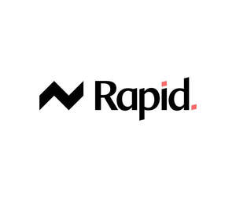

Trade Mark Journal No.2026/005 30 January 2026
UK00004322642 12 January 2026 (35,42)

- Class 35
- Marketing; Advertising and marketing; Advertising and marketing consultancy; Advertising and marketing services; Internet marketing; Advertising, marketing and promotion services; Marketing, advertising and promotion services; Marketing consultancy; Digital marketing; Influencer marketing; Advertising, marketing and promotional services; Advertising, promotional and marketing services; Marketing, advertising, and promotional services; On-line advertising and marketing services; Marketing services; Business marketing consultancy; Online marketing; Advertising copywriting; Promotional marketing; Advertising services for the promotion of e-commerce; Financial marketing; Business marketing services; Promotion, advertising and marketing of on-line websites; Marketing consulting; Affiliate marketing; Promotion [advertising] of business; Consultancy services relating to advertising, publicity and marketing; Referral marketing; Product marketing; Marketing forecasting; Marketing agency services; Consultancy services in the field of affiliate marketing; Research services relating to advertising and marketing; Consulting services in the field of Internet marketing; Business marketing consulting services; Modeling services for advertising or sales promotion; Advertising; Marketing research; Dissemination of advertising, marketing and publicity materials; Marketing analysis; Marketing research services; Modelling for advertising or sales promotion; Advertising, marketing and promotional consultancy, advisory and assistance services; Targeted marketing; Database marketing; Digital advertising services; Market research for advertising; Modeling for advertising or sales promotion; Marketing analysis services; Advertising and promotion services; Consultancy relating to marketing; Trade marketing [other than selling]; Marketing studies; Distribution of advertising, marketing and promotional material; Business marketing consultation services; Search engine marketing services; Direct marketing services; Marketing advisory services; Marketing information; Advertising and promotional services; Promotional advertising services; Promotional and advertising services; Design of marketing surveys; Direct marketing; Copywriting for advertising and promotional purposes; Advertising services; Investigations of marketing strategy; Analysis of marketing trends; Direct marketing consulting; Consultancy relating to business advertising; Marketing advice; Direct market advertising; Consultancy regarding advertising communications strategy; Brand creation services (advertising and promotion); Online advertising services; Online advertising; Mail-order advertising; Market research and marketing studies; Advertising and publicity services; Marketing services in the field of travel; Advertising services for the literary industry; Promotional marketing services using audiovisual media; Advertising services for the promotion of beverages; Marketing consultation services; Marketing services in the field of restaurants; Real estate marketing; Creative marketing plan development services; Consultancy relating to advertising and promotion services; Rental of advertising space on the Internet for employment advertising; Advice in the field of business management and marketing; Publicity and sales promotion services; Marketing services in the field of web site traffic optimization; Copywriting; Advertising and marketing services provided by means of social media; Advertising and advertisement services; Real estate marketing analysis; Sales promotion services; Information or enquiries on business and marketing; Event marketing; Planning of marketing strategies; Advertising research services; Business consultancy services relating to the marketing of fund raising campaigns; Marketing assistance; Promotion [advertising] of travel; Market campaigns; Marketing plan development ; Search engine optimisation for sales promotion; Business advertising services relating to franchising; Graphic advertising services; Advertising services for architects; Providing marketing consulting in the field of social media; Advertising agency services; Business advice relating to strategic marketing; Advertising and promotion services and related consulting; Marketing management advice; Preparation of marketing surveys; Search engine optimization for sales promotion; Advertising research; Business management consultancy via the Internet; Consulting services relating to marketing; Development of marketing concepts; Advertising and publicity; Publicity and advertising; Professional consultancy relating to marketing; Advertising and marketing services provided by means of blogging; Advertising of business web sites; Consultancy relating to demographics for marketing purposes; Advertising and marketing services provided via communications channels; Political advertising services; Sales promotion; Consultancy regarding advertising communication strategies; Business recruitment consultancy; Planning services for marketing studies; Planning services for advertising; Press advertising consultancy; Advertising analysis; Design of advertising flyers; Business promotion services; Marketing (Business advice relating to -); Business advice relating to marketing; On-line advertising; Modelling and models for advertising or sales promotion; Outsourcing services in the field of business analytics; Design of advertising logos; Design of advertising materials; Design of advertising brochures; Advertising services to create corporate and brand identity; Brand positioning; Advertising services to create brand identity for others; Brand strategy services; Brand positioning services; Developing promotional campaigns for business; Brand creation services; Consultancy relating to the organisation of promotional campaigns for business; Organisation of customer loyalty programs for commercial, promotional or advertising purposes; Corporate identity services; Brand evaluation services; Customer loyalty services for commercial, promotional and/or advertising purposes; Consumer profiling for commercial or marketing purposes; Development of advertising concepts; Brand testing; Developing promotional campaigns for businesses; Business merchandising display services; Providing business marketing information; Leasing of advertising hoardings; Banner advertising; Promotional management for sports personalities; Advertising, promotional and public relations services; Development of promotional campaigns; Development of marketing strategies and concepts; Advertising planning; Promotional advertising for exploration projects; Corporate management consultancy; Preparation of advertising campaigns; Providing advice in the field of business management and marketing; Business consultation relating to advertising; Hire of advertising hoardings; Consultancy relating to advertising; Customer club services, for commercial, promotional and/or advertising purposes; Business strategy services; Business assistance relating to corporate identity; Promotional management of celebrities; Recruitment advertising; Web site traffic optimisation; Web site traffic optimization; Production of video recordings for marketing purposes; Video recordings for marketing purposes (Production of -); Post-production editing of advertising or commercials; Production of video recordings for advertising purposes; Video recordings for advertising purposes (Production of -); Production of video recordings for publicity purposes; Video recordings for publicity purposes (Production of -); Producing promotional videotapes, video discs, and audio visual recordings; Website traffic optimization; Website traffic optimisation; Search engine optimisation services; Search engine optimization; Search engine optimisation; Consultancy relating to search engine optimisation; Professional business consultancy services; Business consultancy services; Web indexing for commercial or advertising purposes; Consultancy services regarding business strategies; Consultancy (Professional business -); Professional business consultancy; Online business networking services; Business consultancy (Professional -); Business strategy development services; Arranging subscriptions to multimedia content for others; Creating advertising material; Retail services in relation to recorded content; Compilation, production and dissemination of advertising matter; Advertising material (Dissemination of -); Dissemination of advertising material; Production of advertising material; Distribution of advertising material by post; Updating of advertising material; Advertising material (Updating of -); Updating advertising material; Dissemination of advertising matter online; Retail services relating to downloadable digital image files authenticated by non-fungible tokens [NFTs]; Production of visual advertising matter; Promoting the artwork of others by means of providing online portfolios via a website; Dissemination of data relating to advertising; Advertising text publication services; Dissemination of advertising materials; Business advice relating to advertising; Business advice relating to marketing management consultations; Consulting services in the field of development of advertising concepts; Marketing in the framework of software publishing; Advice relating to marketing management; Writing of publicity texts; Texts (Writing of publicity -); Publicity texts (Writing of -); Consultations relating to business advertising; Rental of all publicity and marketing presentation materials; Marketing research and analysis; Marketing research or analysis; Consulting in sales techniques and sales programmes; Analysis relating to marketing.
- Class 42
- Web site design; Design of web sites; Web portal design; Design of web pages; Web site design consultancy; Design and graphic arts design for the creation of web sites; Web site design services; Website design; Web page design services; Design and graphic arts design for the creation of web pages on the Internet; Web site design and creation services; Internet web site design services; Design, creation and programming of web pages; Design of websites; Website design and development; Design of home pages and web sites; Computer website design; Computer site design; Webpage design services; Design and creation of homepages and web pages; Graphic design for the compilation of web pages on the internet; Design and creation of web sites for others; Website design consultancy; Design of Internet pages; Website design services; Design and maintenance of web sites for others; Design and creating web sites for others; Design and development of homepages and websites; Design and construction of homepages and websites; Homepage and webpage design; Providing information in the field of interior design via a web site; Design of software; Software design; Graphic design; Design and updating of home pages and web pages; Design and development of software for website development; Graphic design services; Design of homepages and websites; Design of homepages and Internet pages; Design and creation of homepages and Internet pages; Consultancy relating to the design of home pages and Internet sites; Logo design services; Designing and developing web pages; Design of home pages; Consultancy relating to the design of homepages and Internet pages; Consultancy relating to the creation and design of websites for e-commerce; Database design; Computer design; Design and development of databases; Programming of customized web pages; Software design and development; Consultancy with regard to webpage design; Design of graphic software systems; Database design and development; Brochure design; Consultancy relating to the creation and design of websites; Design services; Development, design and updating of home pages; Product design; Programming of web pages; Development and design of mobile applications; Design and development of multimedia products; Computer design services; Creation of internet web sites; Architecture design services; Design services for architecture; Design and development of computer databases; Platforms for graphic design as software as a service [SaaS]; Design and development of computer software architecture; Tool design; Intranet design, development and maintenance; Design of typefaces; Graphic illustration design services; Design consultancy; Computer graphics design services; Design and development of networks; Design and development of computer software; Computer software design and development; Design of products; Hosting of customized web pages; Shop design; Creation and maintenance of web sites; Interior design services; Design and development of Internet security programs; Design and development of electronic database software; Computer specification design; Design of artwork; Illustration services (design); Customized design of computer software; Web site hosting services; Smartphone software design; Software design (Computer -); Computer software (Design of -); Design of computer software; Commissioned writing of computer programs, software and code for the creation of web pages on the Internet; Custom design services; Graphic art design; Design and development of computer database software; Interior design; Visual design; Computer aided graphic design; Computer software design services; Services for the design of computer software; Web hosting; Design of stationery; Software as a service [SaaS] featuring software platforms for graphic design; Design of computer database; Technical design; Design and writing of computer software; Graphic design of promotional materials; Design of prototypes; Brand design services; Design services for art-work; Designing and implementing network web pages for others; Design of computer databases; Packaging design; Design of packaging.
Rapid Agency NI Ltd